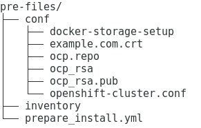

*.cloudapps.example.com. 300 IN A 10.0.0.1
安装准备
Table of Contents
安装准备说明
| 类型 | 说明 |
|---|---|
SELinux |
配置 SELinux(/etc/selinux/config)，确保:
|
DNS |
|
DNA A record |
添加 A 记录 |
NetworkManager |
可选择的，如果禁用，需要手动配置 DNS |
firewall |
推荐打开，对应 ansible inventory 中添加: os_firewall_use_firewalld=True |
Storage |
NFS, GlusterFS, Ceph RBD, OpenStack Cinder, AWS Elastic Block Store (EBS), GCE Persistent Disks, iSCSI. |
安装包 |
# yum install wget git net-tools bind-utils yum-utils iptables-services bridge-utils bash-completion kexec-tools sos psacct # yum update # systemctl reboot |
Ansible Task |
# yum install openshift-ansible |
docker |
# yum install docker-1.13.1 # rpm -V docker-1.13.1 # docker version |
本部分提供两种安装方式：Ansible 执行前续安装，及 Bash 执行前续安装。
Bash 执行前续安装
控制节点静态域名配置
Master 上配置 hosts 内容如下
echo "10.66.208.101 master.example.com master" >> /etc/hosts
echo "10.66.208.102 infra.example.com infra" >> /etc/hosts
echo "10.66.208.103 node1.example.com node1" >> /etc/hosts
echo "10.66.208.104 node2.example.com node2" >> /etc/hosts
echo "10.66.208.105 nfs.example.com nfs" >> /etc/hosts
echo "10.66.208.106 yum.example.com yum" >> /etc/hosts
echo "10.66.208.106 registry.example.com registry" >> /etc/hostsMaster 到其它节点互信
1. 生成 SSH 所需之秘钥。命令如下，应答输入请直接输入回车
# ssh-keygen2. 配置到各节点免密登录
# for i in master infra nfs node1 node2 registry; do ssh-copy-id $i.example.com; done;3. 免密登录验证
# for i in master infra nfs node1 node2 registry; do ssh $i.example.com 'date'; done
Mon Oct 15 20:41:54 CST 2018
Mon Oct 15 20:41:31 CST 2018
Mon Oct 15 20:41:55 CST 2018
Mon Oct 15 20:42:50 CST 2018
Mon Oct 15 20:42:49 CST 2018
Tue Oct 16 04:42:48 CST 2018所有节点 hosts 文件拷贝
# for i in infra node1 node2 nfs ; do scp /etc/hosts root@$i.example.com:/etc/hosts ; done所有节点 yum 源配置
1. 控制节点创建 ocp.repo
cat << EOF > /etc/yum.repos.d/ocp.repo
[rhel-7-server-rpms]
baseurl = http://yum.example.com/repo/rhel-7-server-rpms
enabled = 1
gpgcheck = 0
name = rhel-7-server-rpms
[rhel-7-server-extras-rpms]
baseurl = http://yum.example.com/repo/rhel-7-server-extras-rpms
enabled = 1
gpgcheck = 0
name = rhel-7-server-extras-rpms
[rhel-7-server-ose-3.11-rpms]
baseurl = http://yum.example.com/repo/rhel-7-server-ose-3.11-rpms
enabled = 1
gpgcheck = 0
name = rhel-7-server-ose-3.11-rpms
[rhel-7-server-ansible-2.6-rpms]
baseurl = http://yum.example.com/repo/rhel-7-server-ansible-2.6-rpms
enabled = 1
gpgcheck = 0
name = rhel-7-server-ansible-2.6-rpms
EOF2. 确保所有用户有可读权限
# chmod a+x ocp.repo3. 所有节点 yum 源配置
# for i in infra node1 node2 nfs ; do scp /etc/yum.repos.d/ocp.repo root@$i.example.com:/etc/yum.repos.d/ ; done4. 测试 yum 源配置
# for i in master infra node1 node2 ; do ssh $i.example.com 'yum list | grep openshift-ansible' ; done
openshift-ansible.noarch 3.11.16-1.git.0.4ac6f81.el7
openshift-ansible-docs.noarch 3.11.16-1.git.0.4ac6f81.el7
openshift-ansible-playbooks.noarch 3.11.16-1.git.0.4ac6f81.el7
openshift-ansible-roles.noarch 3.11.16-1.git.0.4ac6f81.el7
...SELinux 设定
查看 SELinux 设定
# for in in master infra node1 node2 ; do ssh $i.example.com 'getenforce' ; done
Enforcing
Enforcing
Enforcing
Enforcing安装软件包
1. yum 更新
# for i in master infra node1 node2 nfs ; do ssh $i.example.com 'yum update -y' ; done2. 安装基本包
# for i in master infra node1 node2 nfs ; do ssh $i.example.com 'yum -y install wget git net-tools bind-utils yum-utils iptables-services bridge-utils bash-completion kexec-tools sos psacct vim tree; echo' ; done3. Master 上安装 openshift-ansible
# ssh master.example.com 'yum -y install openshift-ansible'4. 重起所有节点
# for i in infra node1 node2 nfs master ; do ssh $i.example.com 'reboot' ; doneDNS 配置
1. 所有节点配置 DNS
# for i in master infra node1 node2 nfs ; do ssh $i.example.com 'nmcli connection modify eth0 ipv4.dns 10.66.208.106' ; done2. 测试 DNS
# for i in master infra node1 node2 ; do ssh $i.example.com 'dig master.example.com +short' ; done
# for i in master infra node1 node2 ; do ssh $i.example.com 'dig infra.example.com +short' ; done
# for i in master infra node1 node2 ; do ssh $i.example.com 'dig nfs.example.com +short' ; done
# for i in master infra node1 node2 ; do ssh $i.example.com 'dig node1.example.com +short' ; done
# for i in master infra node1 node2 ; do ssh $i.example.com 'dig node2.example.com +short' ; done
# for i in master infra node1 node2 ; do ssh $i.example.com 'dig registry.example.com +short' ; done
# for i in master infra node1 node2 ; do ssh $i.example.com 'dig test.apps.example.com +short' ; done
# for i in master infra node1 node2 ; do ssh $i.example.com 'dig xyz.apps.example.com +short' ; done安装 Docker
1. 安装
# for i in master infra node1 node2 ; do ssh $i.example.com 'yum -y install docker'; done2. 配置 Docker Storage(可选)
3. 启动
# for i in master infra node1 node2; do ssh $i.example.com 'systemctl enable docker ; systemctl start docker'; done4. 启动验证
# for i in master infra node1 node2 ; do ssh $i.example.com 'systemctl status docker'; done
# for i in master infra node1 node2 ; do ssh $i.example.com 'systemctl is-active docker'; doneDocker 证书配置
1. 拷贝证书
# for i in master infra node1 node2; do scp example.com.crt root@$i.example.com:/etc/pki/ca-trust/source/anchors/ ; done2. 更新信任自签名证书
# for i in master infra node1 node2 ; do ssh $i.example.com 'update-ca-trust extract'; done3. 重起 Docker
# for i in master infra node1 node2 ; do ssh $i.example.com 'systemctl restart docker ; systemctl is-active docker'; done
# for i in master infra node1 node2 ; do ssh $i.example.com 'systemctl is-enabled docker'; done4. 镜像下载测试
# for i in master infra node1 node2; do ssh $i.example.com 'docker pull registry.example.com/rhscl/php-56-rhel7:latest'; doneAnsible 执行前续安装
本部分是在操作控制节点上进行。
操作控制节点安装 Ansible
1 - 安装
# yum install ansible2 - 验证是否已安装了 ansible 软件包
$ rpm -qa | grep ansible
ansible-2.3.2.0-2.el7.noarch
$ ansible --version
ansible 2.3.2.0
config file = /etc/ansible/ansible.cfg
configured module search path = Default w/o overrides
python version = 2.7.5 (default, May 3 2017, 07:55:04) [GCC 4.8.5 20150623 (Red Hat 4.8.5-14)]操作控制节点配置到各节点免密登录
1 - 配置操作控制节点到各节点静态域名解析
echo "10.66.208.101 master.example.com master" >> /etc/hosts
echo "10.66.208.102 infra.example.com infra" >> /etc/hosts
echo "10.66.208.103 nfs.example.com nfs" >> /etc/hosts
echo "10.66.208.105 node1.example.com node1" >> /etc/hosts
echo "10.66.208.106 node2.example.com node2" >> /etc/hosts2 - 配置操作控制节点生成 SSH 所需之秘钥。命令如下，应答输入请直接输入回车
# ssh-keygen3 - 配置到各节点免密登录
for i in master infra nfs node1 node2; do ssh-copy-id $i; done;准备 Playbook 脚本
-
pre-files/prepare_install.yml - Ansible Playbook 脚本
-
pre-files/inventory - 脚本组定义
-
pre-files/conf/ocp.repo - 本地 yum 仓库地址
-
pre-files/conf/ocp_rsa - SSH 免密私钥
-
pre-files/conf/ocp_rsa.pub - SSH 免密公钥
-
pre-files/conf/docker-storage-setup - docker 存储配置文件
-
pre-files/conf/openshift-cluster.conf - dnsmasq 配置文件
如上文件目录结构为:

执行 Playbook 脚本
ansible-playbook -i inventory prepare_install.yml